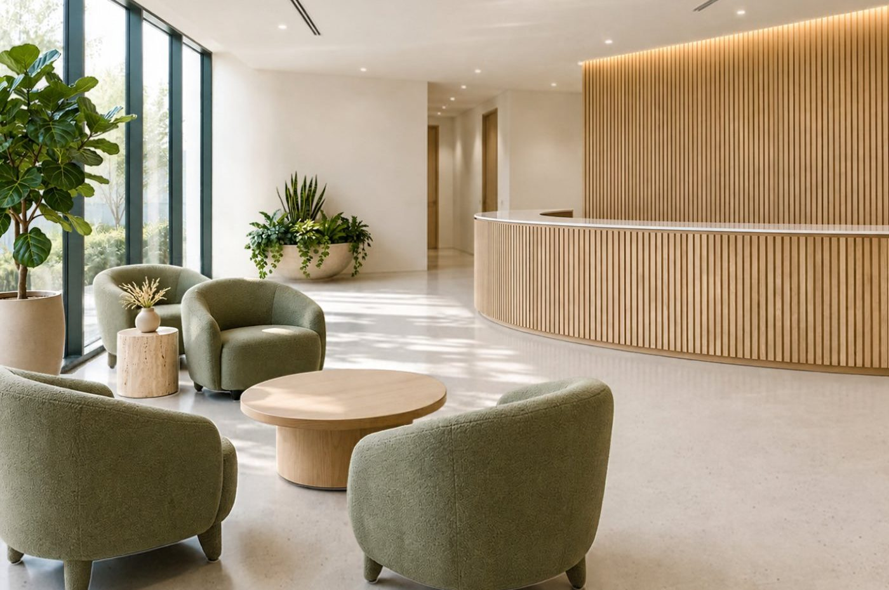

Consulta a preço justo, sem carência e sem mensalidade.
Avaliação completa em 40 minutos, com exames de imagem feitos na própria clínica e plano de tratamento explicado antes de qualquer procedimento.

16anos cuidando do bairro
Tratamentos e valores
Valores de referência para atendimento particular. Convênios aceitos: Amil, Bradesco, SulAmérica e Unimed.
Consultas
Consulta com clínico geral
Com retorno em até 15 dias
R$ 180
Consultas
Consulta com especialista
Dermato, ortopedia ou cardiologia
R$ 260
Consultas
Avaliação odontológica
Inclui radiografia panorâmica
R$ 150
Consultas
Teleconsulta
Retornos e resultados de exames
R$ 120
Procedimentos
Limpeza dental completa
Profilaxia e aplicação de flúor
R$ 220
Procedimentos
Clareamento dental
Consultório e moldeira caseira
R$ 690
Procedimentos
Sessão de fisioterapia
50 minutos, individual
R$ 130
Exames
Check-up essencial
Consulta, sangue e eletrocardiograma
R$ 480
Exames
Ultrassom
Abdome, tireoide ou articulações
R$ 210
Exames
Radiografia digital
Laudo em até 2 horas
R$ 95
Especialidades
- Clínica geralConsulta de rotina, check-up anual, controle de pressão, diabetes e colesterol.
- OdontologiaLimpeza, restaurações, canal, aparelho, implantes e clareamento.
- DermatologiaAcne, manchas, queda de cabelo, mapeamento de pintas e pequenos procedimentos.
- OrtopediaDores na coluna, joelho e ombro, lesões esportivas e acompanhamento pós-cirúrgico.
- FisioterapiaReabilitação, pilates clínico, RPG e drenagem, com avaliação postural.
- Exames de imagemRadiografia digital, ultrassom e eletrocardiograma, com laudo no mesmo dia.
Como é a primeira consulta
- ConversaVocê conta o que incomoda e o que espera. Sem pressa e sem cadeira reclinada.
- Exame e imagemAvaliação clínica e exames de imagem feitos na hora, no mesmo andar.
- Plano por escritoVocê sai com o diagnóstico, as opções de tratamento, os prazos e os valores.

Está com dor agora? Fale com a gente
Alameda dos Arapanés, 1.020 — Moema, São Paulo
| Segunda a sexta | 8h às 20h |
|---|---|
| Sábado | 8h às 14h |
(11) 5000-0000 · contato@clinica.com.br